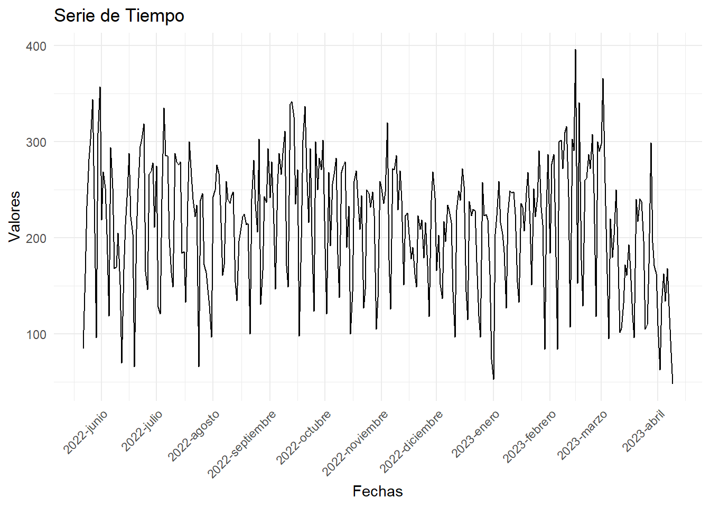

Capítulo 3 Descripción de los datos
3.1 Visualización Inicial
La serie de tiempo a analizar muestra el volumen de llamadas que ingresan diariamente en una linea telefónica; demos una primera visualización a la serie de tiempo que se analizará:
library(ggplot2)
ggplot(datos, aes(x = Date, y = Volume)) +
geom_line() +
labs(x = "Fechas", y = "Valores", title = "Serie de Tiempo")+
scale_x_date(date_breaks = "1 month", date_labels = "%Y-%B")+
theme_minimal() +
theme(axis.text.x = element_text(angle = 45, hjust = 1))
De forma general podemos ver que la serie de tiempo muestra un comportamiento estacional, sin una clara tendencia. No se evidencian valores atípicos significativos, pero estos se validaran próximamente.
3.2 Parametros de la seire de tiempo
Exploremos el tipo de dato y la ventana de tiempo en la que se presenta esta serie:
min_date <- min(datos$Date)
max_date <- max(datos$Date)
tipo_dato <- class(serie_tiempo)
print(paste("Mínimo día:", min_date))## [1] "Mínimo día: 2022-05-22"## [1] "Máximo día: 2023-04-09"## [1] "Tipo de dato: ts"Confirmamos que la serie de tiempo quedo en el formato correcto “ts” y que esta trae datos desde el 22 de mayo del 2022 hasta el 9 de abril del 2023.